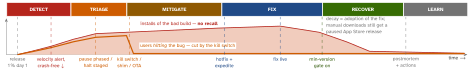

debugging · folio
In one line: A build already on users’ phones cannot be recalled — pausing or halting a rollout only stops it reaching more people. So: detect per version, stop the spread (pause / halt), neutralise the bad path server-side (kill switch, compatibility shim, OTA JS rollback), ship a fix (hotfix + expedited review, then force-update), communicate, and learn in a blameless postmortem.
Download PDF Print view LaTeX source


Detect — per version, fastest first
| signal | basis | what it says |
|---|---|---|
| Crashlytics velocity | 30 min, one version | one crash/ANR type hits a set % of users — not sent until you pick a channel (regressed + trending: on by default) |
| crash-free users | a period | 1 - crashed / all users, aggregated, not averaged; sessions beside it |
| Play vitals | 28-day avg, daily | user-perceived crash 1.09 %, ANR 0.47 %, 8 % on one phone model; over → Play may cut visibility, warn on the listing |
| Xcode Crashes organizer | opt-in users | TestFlight: all users; no watchdog, jetsam, thermal or code-signature kills |
| MetricKit | on device | diagnostics delivered immediately (iOS 15+); iOS 27: MetricManager |
| backend · business | live | 4xx/5xx, latency, payments by an App-Version header · funnel, logins; reviews and
tickets lag |
Units differ: vitals count per daily active user, Crashlytics per session — 1 crash in a user’s 3 sessions = 100 % vs 33 %.
Declare, organise, triage
- Declare if any holds: a second team is needed · customers can see it · unsolved after an hour of concentrated analysis. Declaring early and closing on a simple fix beats starting hours in.
- Stop the bleeding first — make the system work as well as it can; root cause later.
| role | holds |
|---|---|
| IC | the state and every role not delegated; the living incident document; explicit handoff |
| Ops | the only hands changing the system — flags, rollout, backend |
| Comms | the public face: periodic updates to team + stakeholders (status page, in-app banner) |
| Planning | bugs, handoffs, every divergence (flag, shim) so it can be reverted |
- Blast radius: version/build, OS, device, region, locale, flag arm; % of DAU.
- What changed: release, config/flag, backend deploy, OS release — line up the timelines.
- Harm: data, money, security/privacy — or annoyance? Workaround?
| sev | scale (PagerDuty) | mobile example |
|---|---|---|
| SEV-1 | critical, many customers, or customer data exposed; public notice | launch crash for most; payments down |
| SEV-2 | many customers cannot use the product | core flow broken |
| SEV-3 | partial loss, not most customers; may grow into SEV-2 | one OS or locale broken |
| SEV-4 | minor; product still usable | slow screen |
| SEV-5 | cosmetic | typo |
SEV-1/2 = major incident, IC paged. Unsure? Take the higher; argue in the postmortem.
Who each lever reaches
| lever | has it | more | catch |
|---|---|---|---|
| pause phased | × | part | auto-updates only: manual downloads, new installs still get it |
| halt staged / 100 % | × | ✓ | Play serves the previous release instead |
| remove from sale | × | ✓ | App Store, whole app, ≤ 24 h |
| kill switch / flag | ✓ | ✓ | only if built in; at the next config fetch |
| backend shim | ✓ | ✓ | old response shape for build X; server debt |
| OTA rollback | ✓ | ✓ | JS only, same runtime version; next cold start |
| hotfix + force update | ✓ | ✓ | review + adoption; the gate must be in the old build |
Stop the spread — the stores
| App Store — phased | Google Play — staged | |
|---|---|---|
| pace | fixed 1·2·5·10·20·50·100 % over 7 days; random auto-update users | your %, never rises by itself; random new + existing users |
| for | version updates | updates, not the first publish |
| stop | pause: 30 days in total, any number of times; resumes on the same day | halt: no additional users; resume to any % |
| leak | anyone may download it manually | — |
| at 100 % | submit an update, or remove the app | halt it too: the previous full release is served to new users and all not on it — not a track’s first release |
| has it | keeps it | keeps it |
Fix — hotfix, review, adoption
- Smallest diff, cherry-picked to the release branch. App Store: incremental version + incremented build string; Play:
versionCodeabove every previous one (max 2 100 000 000). - Review: ≥ 50 % in < 24 h, 90 % in < 48 h. Expedited: only a submission already sent; critical bug + steps to reproduce on the current version in Notes; granted as availability allows. A rejected bug-fix with no legal/safety issue may ship, fixed next time — once per issue. Then phased, or Release to All Users at any time.
- Force update:
min_supportedin config → blocking screen → store. Play in-app updates:IMMEDIATE(full screen; Play installs + restarts) orFLEXIBLE(background);inAppUpdatePriority0–5 set at rollout via the Play Developer API, never changed. - Recovered = that version’s crash-free / funnel back at baseline, not “PR merged”.
Kill switch — config, timing, crash loops
{ "min_supported": { "ios": "4.12.1", "android": 41201 },
"kill": { "new_checkout": { "ios": ["4.13.0"] } },
"banner": { "text": "Payments delayed, fixing now" } }- Firebase Remote Config: default minimum fetch interval 12 h; values apply on
activate. Real-time listener (Apple SDK 10.7.0+): server invalidation → fetch past the interval, foreground only. - expo-updates guards JS crash loops: an error before the first render on an update’s first launch marks it failed, waits 5 s for a newer one, else reloads the last that launched; > 10 s after first render it is not caught.
eas update:rollback→ a previous update or the embedded one.
Learn — blameless postmortem
- Triggers: user-visible degradation past a threshold · any data loss · on-call intervention · resolution time past a threshold · a monitoring failure · any stakeholder asks.
- Record: timeline (UTC; TTD, TTM, TTR), impact in numbers, actions, root cause(s), follow-ups with owner + date. Blameless: causes, not culprits — everyone acted in good faith on what they knew.
Traps
- Launch crash before config loads: no kill switch reaches it — guard crash loops, cache config.
- Removing from sale to stop a phased release: reinstated, the version goes to 100 % at once.